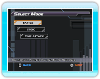

18 |
STAND ALONE Mode |
 |
|
STAND ALONE mode has three different sets of rules to choose from. Select the type of race you want to participate in, then press
● BATTLE
● STOIC
● TIME ATTACK
Once a type of race has been chosen, you must select a character and equipment to race with. Finally, select a course to board on, and the race will begin.
The level of difficulty can be changed for BATTLE and STOIC via OPTIONS mode.
|
 |
 |
 |